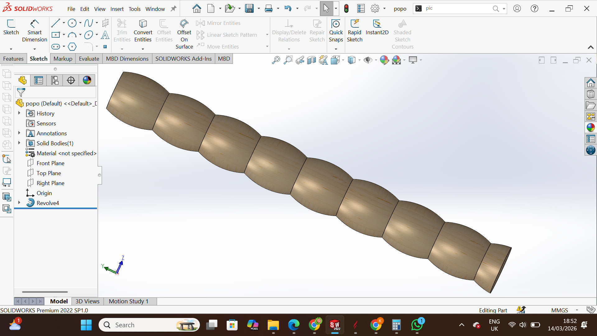

SolidWorks Project
Designed a classic turned wooden spindle (baluster) using SolidWorks. This precision 3D model is suitable for furniture, staircases, or architectural woodwork and demonstrates accurate revolving features and clean geometry.
SolidWorks 2022